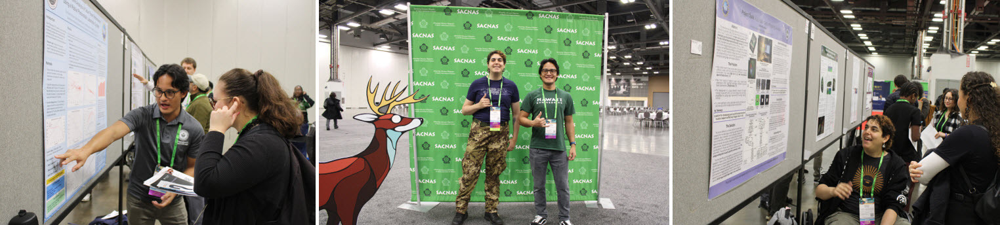

|
 |
Copied from Maui Announcement Portal:
Proud to share that two University of Hawaii Maui College PKII scholars, Christian and Parker, presented their research projects at the 2025 SACNAS National Diversity
in STEM Conference in Columbus, Ohio, from October 30 to November 1.
Their projects were titled:
Dr. Rai leads Project Kaihuwaʻa II , a $2.6 million S-STEM grant funded by the National Science Foundation (NSF) in a consortium between UH Maui College & Hawaii CC. As the Principal Investigator and Program Director, he encourages all PKII scholars to apply for research internships, as there is sufficient funding available this year. Project Title: Uniting Culture, Purpose, Connection, and the Academic Journey to Advance Low-Income Students in Engineering Pathways Through Distance Education. Change of Scope: Uniting Culture, Purpose, Connection, and the Academic Journey to Advance Hawaii's Low-Income Undergraduate Students in STEM. Dr. Rai currently leads a team of faculty mentors, staff, and approximately 50 student awardees, including four new research scholars and there peer mentors on Maui. Their projects cover areas such as orbital debris and solar energy efficiency, among others. He is thankful for the support of colleagues, especially Prof. Calder and Dr. Dubuit!
Dr. Rai uploaded all of his presentation slides from the June 25 Science Meeting held during the Galapagos expedition aboard the R/V Sally Ride. You can view the presentation HERE .
Added a new folder for recent student research activities in geology, renewable energy, and sensor technology. Click Student Research to explore!
Updated the lab manual with new examples; Access the file
here
.
Project Background: In summer 2024, your physics professor joined an ocean-bottom seismograph research project with geoscientists & PI from
the University of Oregon, University of Hawaii, and the University of Rhode Island. The team studied the Nazca and Cocos tectonic plates near
the Galapagos Islands, observing the Nazca Plate’s northwest movement at 50 mm/year and the Cocos Plate’s northeast movement at 70 mm/year.
This lab uses vector analysis to predict these plates' future movements. For additional context, refer to
Lab #3.